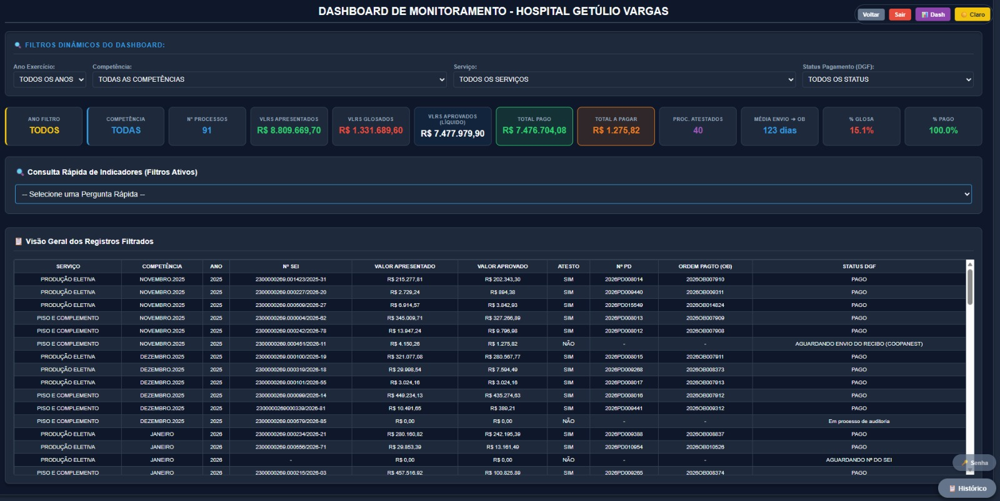
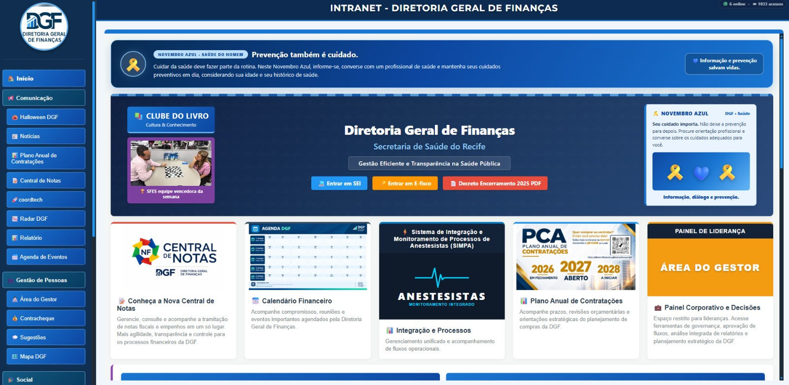
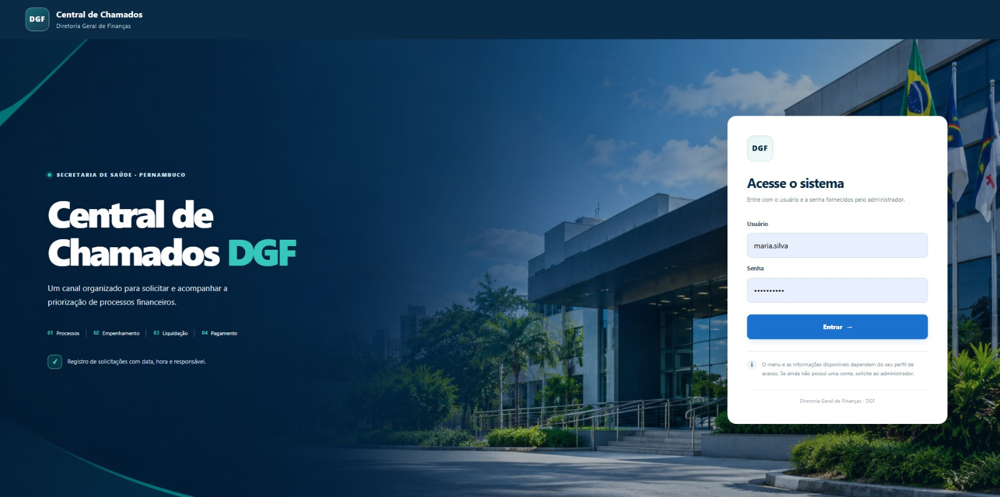
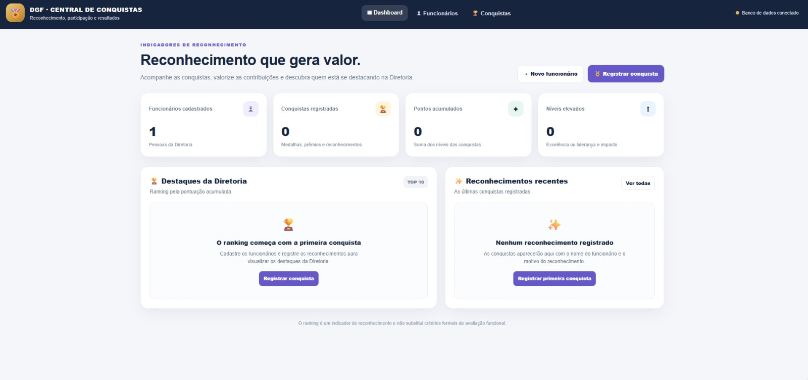

Sistemas web
Aplicações sob medida para organizar operações e rotinas.
Desenvolvedor Full Stack focado na criação de soluções digitais completas, atuando do front-end ao back-end para simplificar rotinas, organizar informações e ajudar pessoas e equipes a alcançar melhores resultados.
Desenvolvimento com propósito: entender a necessidade, estruturar a solução e entregar uma experiência simples para quem utiliza.
Aplicações sob medida para organizar operações e rotinas.
Painéis visuais para acompanhar dados e resultados.
Redução de tarefas manuais e fluxos mais organizados.
Ambientes digitais para comunicação e serviços internos.
Uma seleção de soluções desenvolvidas para apoiar a gestão, a comunicação e o acompanhamento de atividades.

Atuação na criação e manutenção do Sistema Integrado de Monitoramento, com filtros, indicadores, gestão de registros e acompanhamento de serviços e unidades.

Portal interno que reúne comunicação, notícias, gestão de pessoas, serviços corporativos, iniciativas sociais e conteúdos de aprendizagem em um ambiente centralizado.

Projeto voltado à centralização das solicitações internas, com uma interface própria para apoiar a organização e o acompanhamento do atendimento.

Sistema de registro e valorização de conquistas dos colaboradores, com cadastro de realizações, descrição dos reconhecimentos e visão de destaque por meio de indicadores e ranking.
Um processo organizado ajuda a manter o foco no que realmente importa: resolver o problema e entregar uma ferramenta útil.
Compreender o cenário, as pessoas envolvidas e os objetivos do projeto.
Organizar funcionalidades, prioridades e a experiência de uso.
Desenvolver, testar e ajustar a aplicação conforme as necessidades.
Identificar melhorias e evoluir a solução junto com o projeto.
Se você busca um sistema, um portal interno ou uma forma mais inteligente de organizar processos, estou aberto a conversar sobre novos desafios.